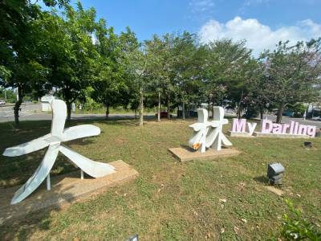

大林鎮舊名為「大莆林」、「大埔林」，此地名之由來有兩種說法，一種說法係指本地在開墾初期乃為廣大的森林地帶，故有此稱；另一種說法為往昔此地有來自潮州府大埔之林地的移民，而有此稱。後來才改為『大林』
大林鎮（臺灣話：Tuā-nâ-tìn）位於臺灣嘉義縣北部，南接民雄鄉，西鄰溪口鄉，東鄰梅山鄉，北鄰雲林縣大埤鄉、斗南鎮、古坑鄉，面積約64平方公里，為嘉義縣北方的門戶及地方中心，主要吸引溪口及梅山兩鄉為主。
近年開始興建大埔美精密機械園區對於地方發展及人口成長，有相當大的影響。由於當地設有大林慈濟醫院提供醫療服務，鎮上平日流動人數比例逐漸成長，並與緊臨之嘉義都會區屬同一生活圈，鎮內往嘉義都會區內之通勤比例相當高。
